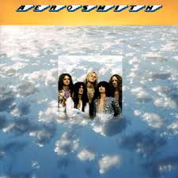

Biografía
Aerosmith es una banda estadounidense de rock formada en Boston, Massachusetts, en 1970. Son conocidos como "los chicos malos de América" por su estilo rebelde y su fusión de hard rock, blues y rock clásico. La banda alcanzó la fama con su álbum Toys in the Attic (1975), que incluye éxitos como “Sweet Emotion” y “Walk This Way”. A lo largo de los años, Aerosmith ha tenido altibajos, incluyendo problemas de adicciones entre sus miembros, pero lograron mantenerse activos y exitosos gracias a su química musical y energía en vivo. Su colaboración con Run-D.M.C. en 1986 revitalizó su carrera y los acercó a nuevas generaciones.
Información detallada
- Origen: Los Ángeles, California, EE. UU.
- Año de formación: 1985
- Género: Hard Rock / Rock
- Fundadores (miembros originales): Axl Rose, Slash, Izzy Stradlin, Duff McKagan, Steven Adler
- Vocalista principal: Axl Rose
- Integrantes destacados (a lo largo de su historia): Slash, Duff McKagan, Izzy Stradlin, Steven Adler, Matt Sorum, Dizzy Reed
- Álbumes icónicos: Appetite for Destruction (1987), Use Your Illusion I & II (1991), Chinese Democracy (2008)
- Logros: Más de 100 millones de discos vendidos a nivel mundial; influencia clave en el rock de finales del siglo XX
- Estilo musical: Riffs potentes, voz visceral y mezcla de blues-rock con actitud punk y glam
